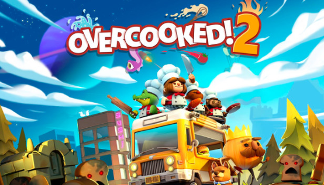
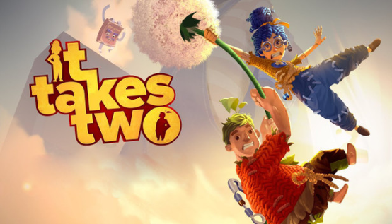
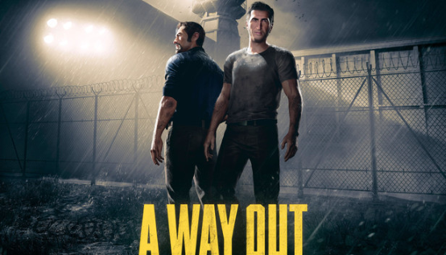

Cooperativo

Overcooked! 2
¡Overcooked vuelve con un nuevo y caótico juego de cocina en acción! Regresa al Reino de la Cebolla y organiza tu equipo de chefs en un cooperativo clásico o en partidas en línea de hasta cuatro jugadores. Agarraos los delantales... es hora de salvar el mundo (¡otra vez!)
Hasta 23€
It Takes Two
It Takes Two para PC es un juego de acción y aventuras publicado por EA Games y creado por Hazelight, responsables de A Way Out, un juego con una mecánica similar, pero no relacionada, que ganó un premio BAFTA. En este caso, It Takes Two es un juego cooperativo para dos jugadores.
Hasta 40€
A Way Out
De los creadores de Brothers - A Tale of Two Sons llega A Way Out, una aventura exclusivamente cooperativa en la que te metes en la piel de uno de los dos reclusos protagonistas en su intrépida huida de la cárcel.
Lo que comienza como una fuga cargada de adrenalina se acaba convirtiendo en una impredecible y emocionante historia totalmente distinta a todo lo que hayas visto o jugado.
A Way Out es una experiencia para disfrutar entre dos jugadores. Cada uno de ellos controla a uno de los principales personajes, Leo y Vincent, que unen fuerzas a regañadientes para escapar de la cárcel y recobrar su libertad.